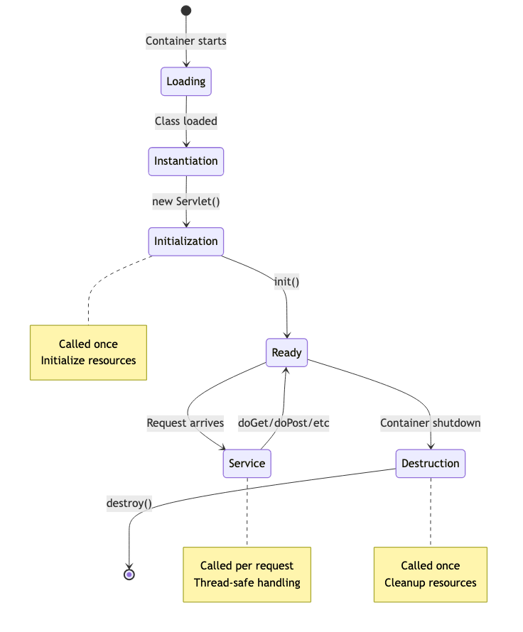
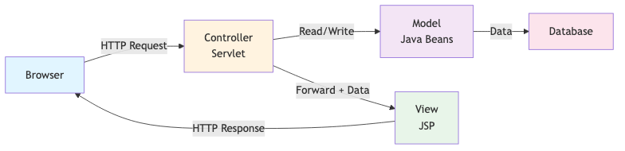
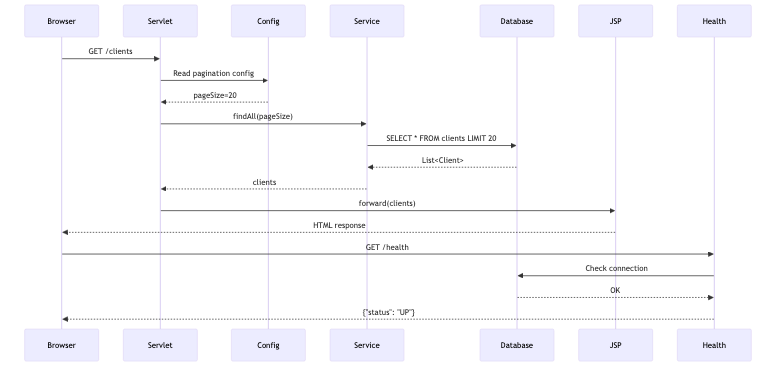
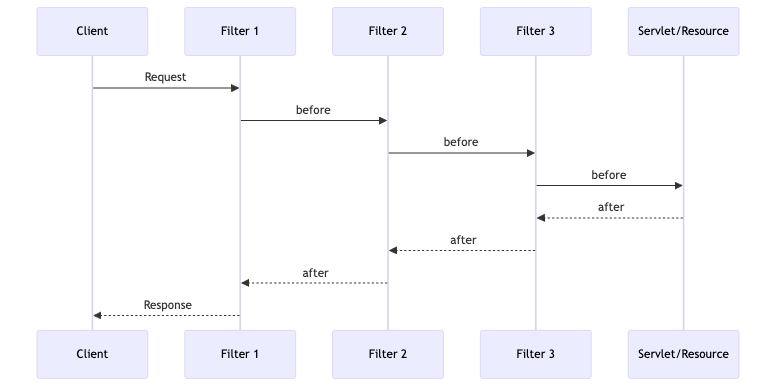
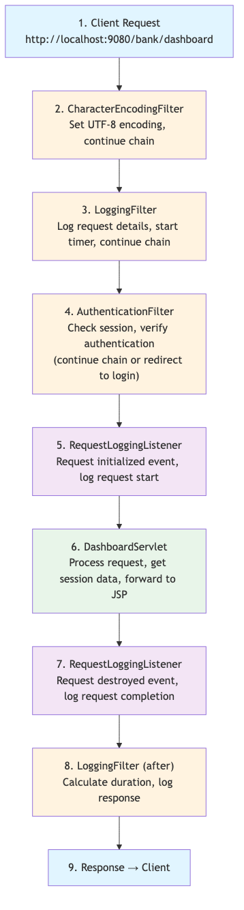

Contenu du cours
Toutes les sections — cliquez sur un titre pour développer.
📋 Objectifs d'apprentissage
- Comprendre le cycle de vie complet d'un servlet
- Créer des pages web dynamiques avec JSP et JSTL
- Implémenter le pattern MVC dans les applications web
- Utiliser MicroProfile Config dans la couche web
- Ajouter des health checks pour les composants web
- Construire une interface web bancaire complète
🔄 Cycle de vie d'un Servlet
Un servlet est une classe Java qui gère les requêtes HTTP et génère des réponses dynamiques.

Phases du cycle de vie :
- Loading & Instantiation — chargement de la classe par le conteneur
- init() — initialisation des ressources (appelé une seule fois)
- service() — traitement de chaque requête HTTP
- destroy() — libération des ressources (appelé une seule fois)
🔄 Méthodes HTTP — doGet, doPost
- doGet() — récupération de données, recherche, liste de ressources
- doPost() — soumission de formulaire, création de ressources
- doPut() — mise à jour complète d'une ressource
- doDelete() — suppression d'une ressource
Pattern PRG (Post-Redirect-Get) : après un POST réussi, rediriger vers un GET pour éviter les doubles soumissions.
🎨 JavaServer Pages (JSP)
JSP est une technologie pour créer des pages web dynamiques avec du HTML embarqué Java.
Éléments de syntaxe JSP :
- Directives
<%@ page ... %>— configuration de la page - Scriptlets
<% ... %>— blocs Java (à éviter) - Expressions
<%= ... %>— affichage de valeurs - EL (Expression Language)
${...}— accès simplifié aux données - JSTL — tags standards pour itération, conditions, formatage
Bonne pratique : Éviter les scriptlets — utiliser JSTL et EL !
🏗️ Pattern MVC

Responsabilités :
- Model — logique métier, accès aux données (classes Java, entités JPA)
- View — couche présentation (JSP, HTML, CSS)
- Controller — gestion des requêtes, contrôle du flux (Servlets)
⚙️ MicroProfile Config dans la couche Web

- Externaliser la configuration (URLs, limites, feature flags)
- Paramètres spécifiques à l'environnement (dev, test, prod)
- Sources de configuration (priorité décroissante) : system properties → env vars → microprofile-config.properties
💊 Health Checks — Liveness et Readiness
- Liveness — l'application est-elle en cours d'exécution ?
- Readiness — l'application est-elle prête à traiter des requêtes ?
- Startup — l'application a-t-elle démarré avec succès ?
Endpoints : /health · /health/live · /health/ready · /health/started
🔐 Session HTTP
- Maintient l'état utilisateur dans le protocole HTTP sans état
- Identification par ID de session (cookie JSESSIONID)
- Prévention session fixation : invalider l'ancienne session avant la nouvelle
- Protection : HttpOnly + Secure flags sur les cookies, timeout configuré
🔍 Filtres Servlet

Les filtres interceptent les requêtes/réponses pour les préoccupations transverses :
- Authentification et autorisation
- Journalisation et audit
- Modification requête/réponse
- Compression et chiffrement
- Gestion CORS
👂 Listeners Servlet

Les listeners réagissent aux événements du cycle de vie :
- ServletContextListener — démarrage/arrêt de l'application
- HttpSessionListener — création/destruction des sessions
- ServletRequestListener — début/fin de chaque requête